결국, 안전불감증.
최근 많은 산불의 원인으로 입산자의 실화가 지목된 바,관악산 등산로에서도 라이터와 담배꽁초가 발견됐다.기자는 지난 14일(화) 관악산을 찾았다.등산로를 따라 내려오는 길목에 설치된 나무의자 아래에서라이터가 흙에 일부 묻힌 채 발견됐다.주변에서는 검게 그을린 담배꽁초도 발견됐다.발견된 꽁초는 낙엽이나 나뭇가지 등 연료가 없는 맨땅 위에 떨어져 있어즉각적인 화재로 이어지지는 않은 것으로 보인다.
관악산은 많은 등산객이 오가기 때문에 산불 위험은 언제나 존재한다.일부 등산객이 주머니에 넣어 온 한 뼘만한 라이터로도그 산 전체를 태워버릴 수 있다. 백민호 교수(강원대 소방방재학과)는“약간의 부주의가 대형 산불로 이어질 수 있다는 인식이 중요하다”라며“애초에 라이터와 같은 불필요한 물건을 가지고 입산하지 않도록인식 개선을 할 필요도 있다”라고 지적했다.'산림보호법' 제57조 4항에 따르면, 산림에서의 화기 사용은 엄격히 제한되며라이터 등 인화물질을 지닌 채 산에 들어서는 행위만으로도과태료가 부과될 수 있다.
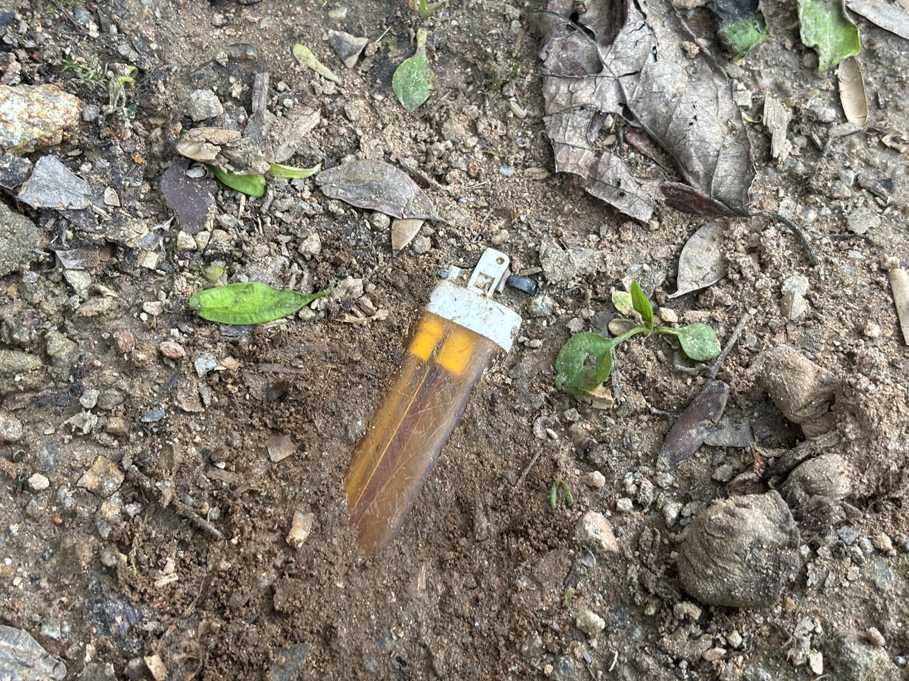
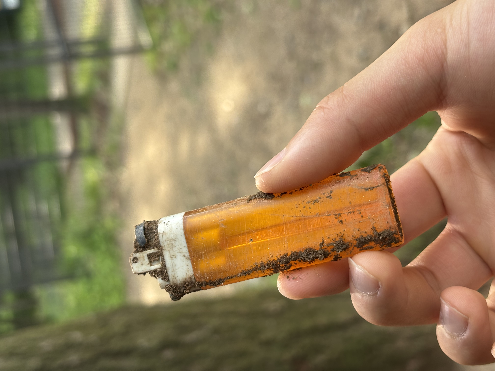
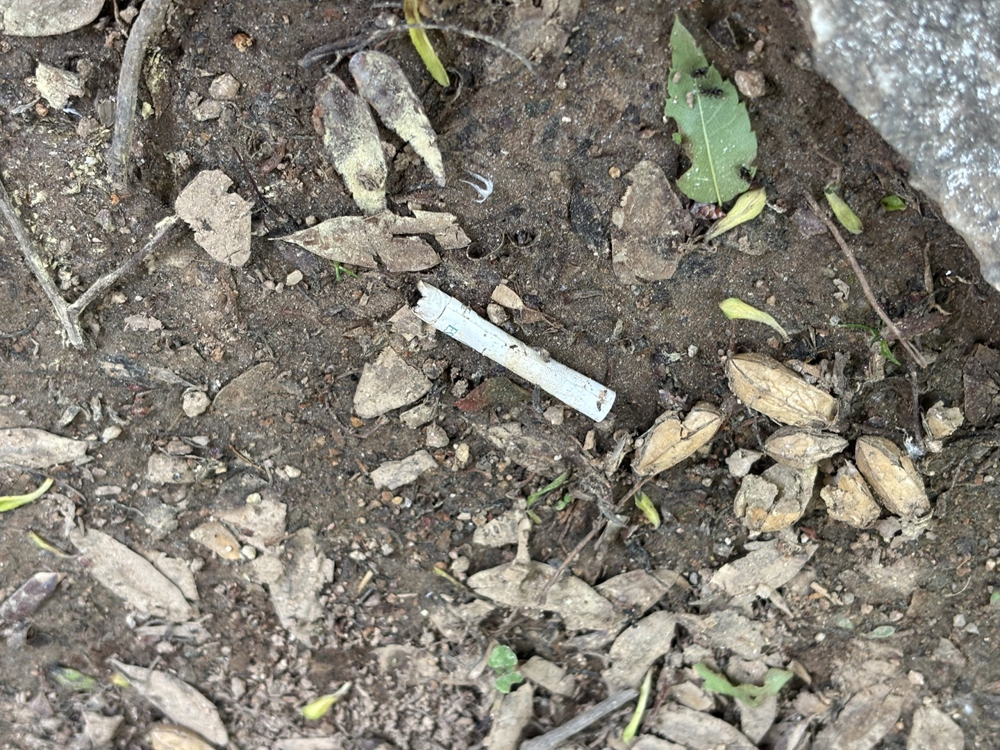
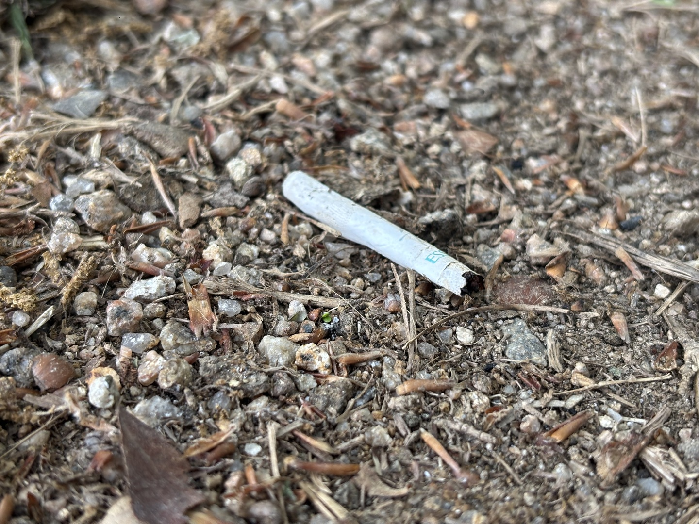
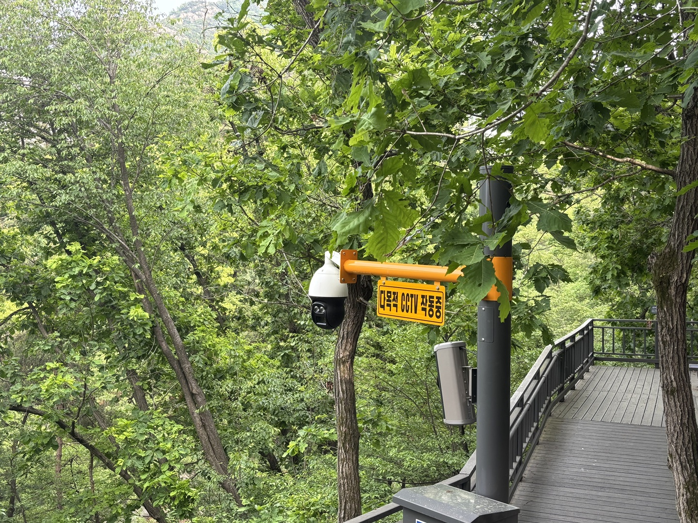
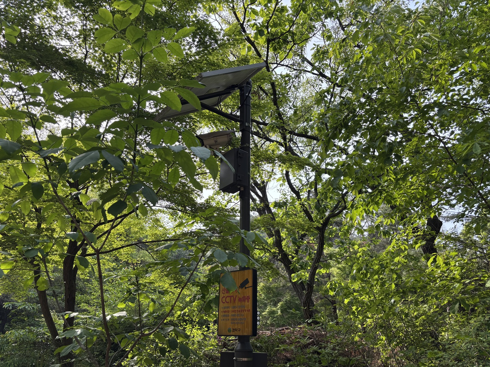
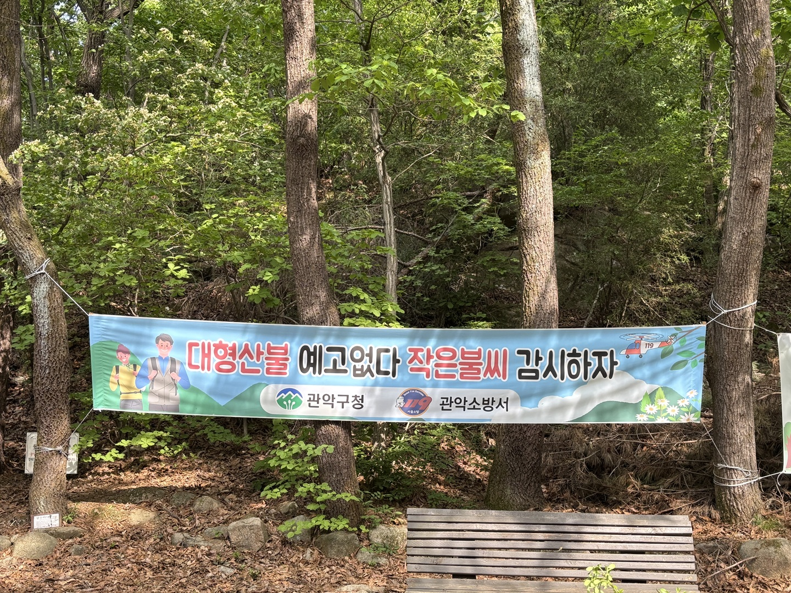
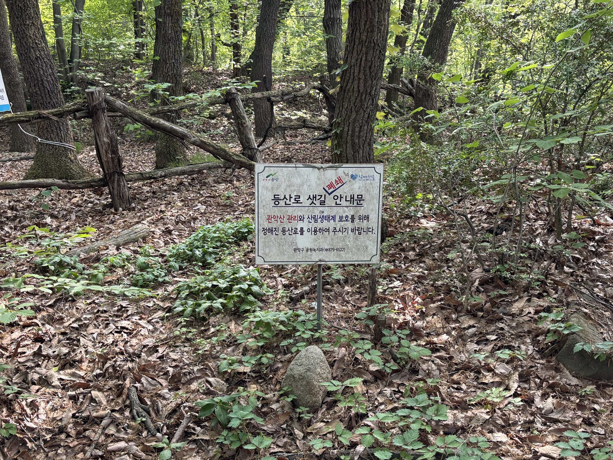
다만 산림에서의 흡연 및 화기 사용을 적발하는 데에는 실질적인 한계가 있다.직접 등산로를 걸어 보니 관악산에는 많은 감시카메라가 설치돼 있었지만,관악산 등산로의 모든 구간에 설치하기는 어려울뿐더러사각지대가 존재할 수밖에 없다는 한계가 있었다.등산로는 건물 복도처럼 네모반듯하고 뼝 뚫려 있지 않다.지형의 오르내림이나 나무·바위 등 자연물의 방해를 뚫고등산로를 100% 감시하기란 불가능에 가깝다.또 정해진 등산로를 벗어나는 경우도 CCTV를 활용한 감시가 불가하다.「뉴시스」 보도에 따르면, 지난 4월 두 차례 발화했던 대구 함지산의 경우 발화지점이 정해진 등산로가 아니어서 CCTV 확보에 어려움을 겪은 바 있었다.
“산림에 불을 지른 자는 최대 15년 이하의 징역, 3천만 원 이하의 벌금에 처해질 수 있으며… 실수로 불을 내도 3년 이하의 징역이나 3천만 원 이하의 벌금.”
서울 관악산 중턱에서 마주친 현수막에는 위와 같 경고 문구가 적혀 있었다.
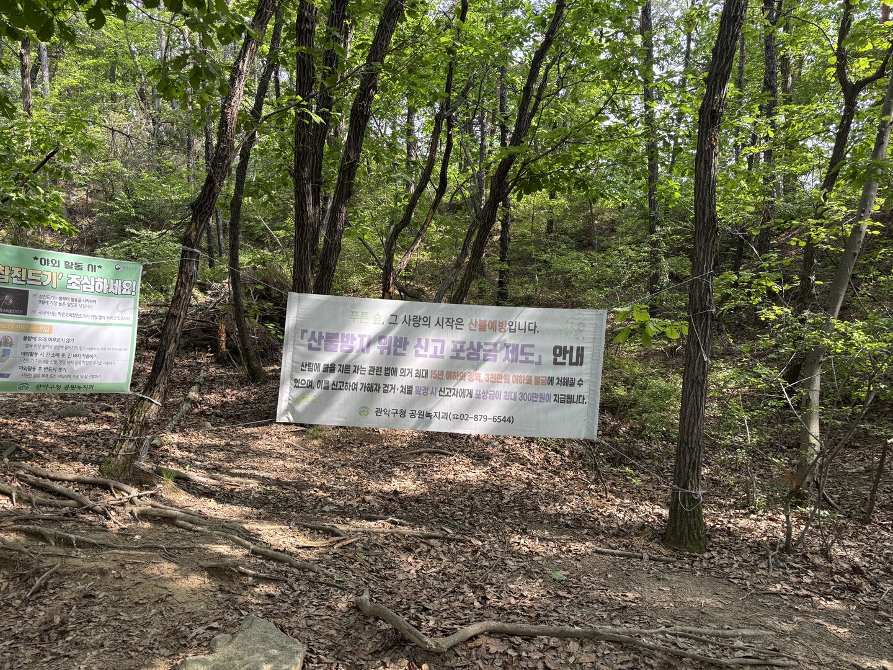
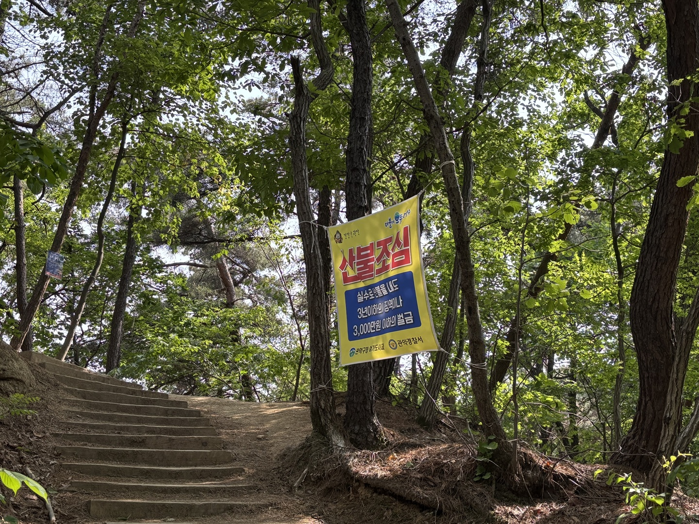
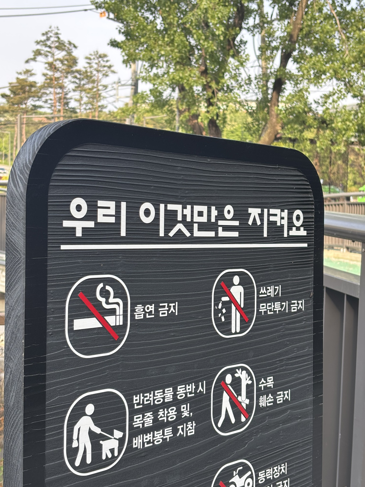
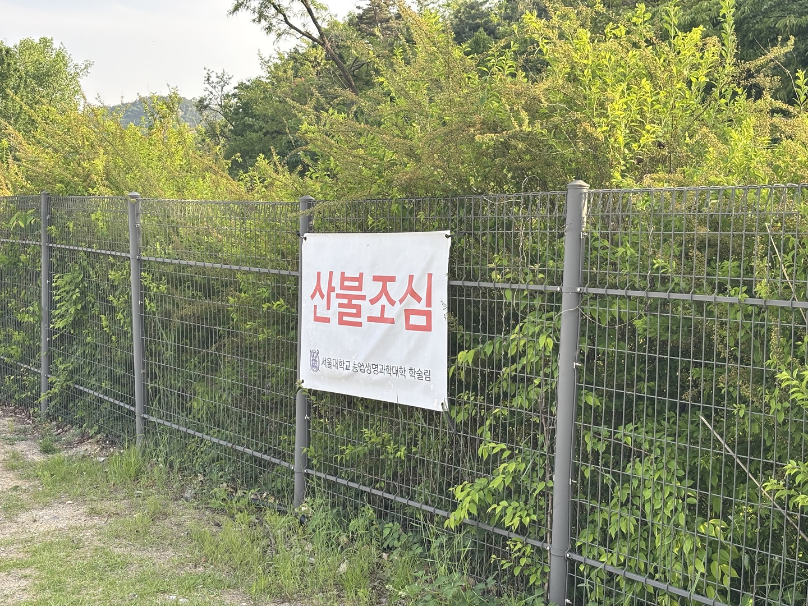
하지만 실제로 산불이 발생하지 않은 경우, 같은 행위라도 처벌 수위는 크게 달라진다. '산림보호법' 제57조에 따르면 산에서 흡연을 했으나 산불로 이어지지 않은 경우 20만 원 이하의 과태료가 부과된다. 반면 산불이 발생할 경우에는 제53조에 따라 3년 이하의 징역 또는 3천만 원 이하의 벌금형이 적용된다. 결과적으로 처벌 수준은 ‘불이 났는지 여부’에 따라 좌우되며, 이 차이는 사실상 ‘운’에 불과하다는 비판이 제기된다. 박필선 교수(산림과학부)는 산림 내 흡연 행위에 대해 “불이 나지 않았더라도 사실상 ‘산불 미수’라고 볼 수 있다”라며 “산에서 담배를 태울 경우, 불이 나는지 안 나는지 여부는 순전히 운에 좌우된다”라고 언급했다. 결과보다는 산림 내 흡연 행위에 초점을 맞춰 과태료 규정을 대폭 강화해야 한다는 목소리가 나오는 이유다.
국립산림과학원에 따르면 최근 10년간 발생한 산불 중 31.2%는 입산자의 실화로 발생했다. 그럼에도 불구하고 무단 화기 사용에 대한 현행 과태료 상한선은 최대 50만 원에 불과하다.
화기 소지는 그 자체로도 산불 가능성을 높이는 위험 요소인 만큼, 실제 산불 발생 여부와 관계없이 강한 처벌이 필요하다는 목소리가 높아지고 있다. '국회입법조사처'는 지난 5월 2일 발표한 보고서를 통해 “산불 예방을 위한 행위 제한 위반 시 과태료 기준을 현행보다 강화하고, 입산통제구역 지정 범위 확대와 함께 위반 시 처벌 수위를 높일 필요가 있다”라고 권고했다. 백민호 교수도 “꼭 벌칙의 강화가 최선의 대책은 아닐 수 있다. 하지만 현행 벌칙 기준은 외국에 비해선 약한 편이고, 처벌 수위 강화에 대한 국민적 공감대도 있다고 본다”라고 조언했다.
이에 따라 산림청은 오는 2026년 2월부터 개정되는 ‘산림재난방지법’을 토대로 무단 화기 사용에 대한 과태료를 최대 200만 원으로 상향할 계획이라고 밝혔다. 구체적인 시행령은 아직 공개되지 않았다.
전문가들은 이 같은 조치와 함께 범국민적 인식과 행동 개선이 필수적이라고 지적했다. 백민호 교수는 “산에서 화기를 사용하면 안 된다는 사실은 보통 다 알고 있지만, 알면서도 어기는 경우가 많다고 볼 수 있다”라며 “산불이 빈번히 발생하는 3·4월에는 전 국민이 산불감시원 역할을 하며 주의하는 분위기가 더 적극적으로 형성돼야 한다”라고 조언했다. 박필선 교수도 “나 하나쯤이야, 하고 알면서도 화기를 사용하는 안일함이 대형 산불의 원인이 될 수 있다”라며 “최근 산불은 사람으로 인해 일어나는 인재(人災)인 경우가 많은 만큼, 인식개선을 위한 홍보를 꾸준히 늘릴 필요가 있다”라고 지적했다.